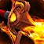

惩戒骑 PvP 判断训练器
惩戒骑的活不只是打伤害，是决定这一波谁死不了。
所以惩戒骑的判断跟纯输出专精不一样——你既要看自己的爆发窗口，也要看队友的血线。牌交早了后面没得救，交晚了人已经倒了。
该不该开？勾一下就知道
勾掉几条，就有多少胜算。
三个时钟
惩戒骑的节奏挂在这三个数字上。
24 秒内伤害、治疗和爆击几率同时提高。它不只是输出冷却，也放大你的自保和外部治疗。
这意味着它的开法比纯输出职业灵活：需要拼输出时当爆发用，需要扛一波时当续航用。

资源时钟 ·猛击前方敌人并生成 3 点神圣能量，同时施加持续伤害。它是惩戒开窗口的启动键。
神圣能量是惩戒所有大招的燃料——能量不够，窗口里按不出东西。
Forbearance 是关键限制：用了保护祝福，同一个人短时间内不能再吃
本版定盘（top50 三对三实测）
晨光使者（Herald of the Sun）50/50，圣殿武士（Templar）是 0。这不是推荐，是唯一解。
这条线围绕 Dawnlight 展开——神圣能量消耗技能给目标挂持续伤害或治疗，顺带强化了你「一边输出一边奶」的定位。
Hallowed Ground（49/50）—— 奉献清除并压制范围内友方的减速。Blessing of Spellwarding（28/50）—— 免疫魔法版的保护祝福，对面法系重时换上。Searing Glare（14/50）—— 范围致盲。
三格 50 人 = 150 个选择，上面四项占了其中 141 个。